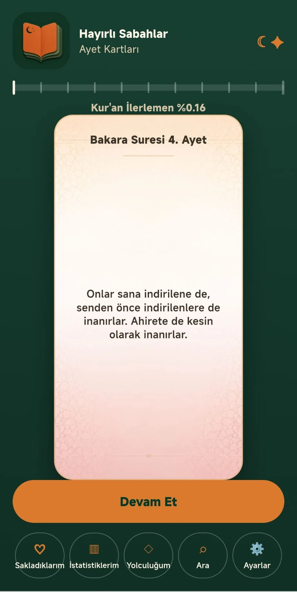
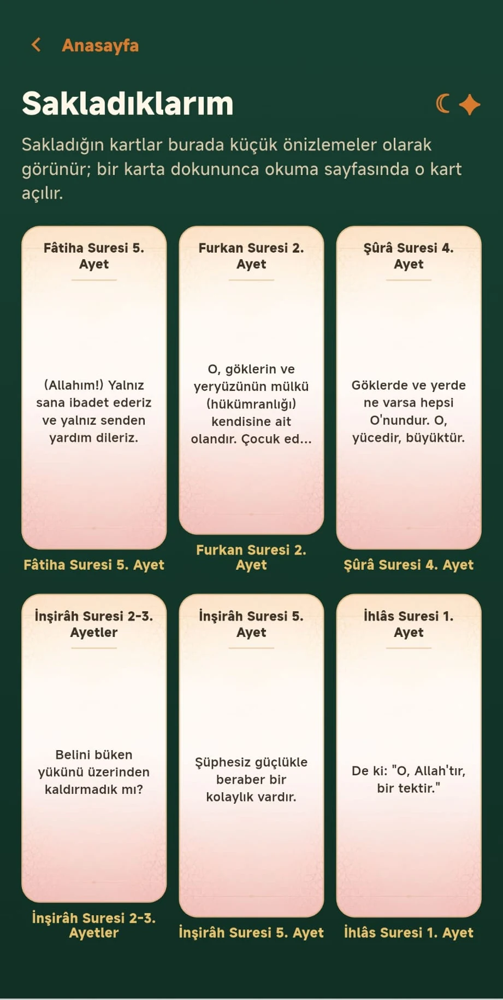
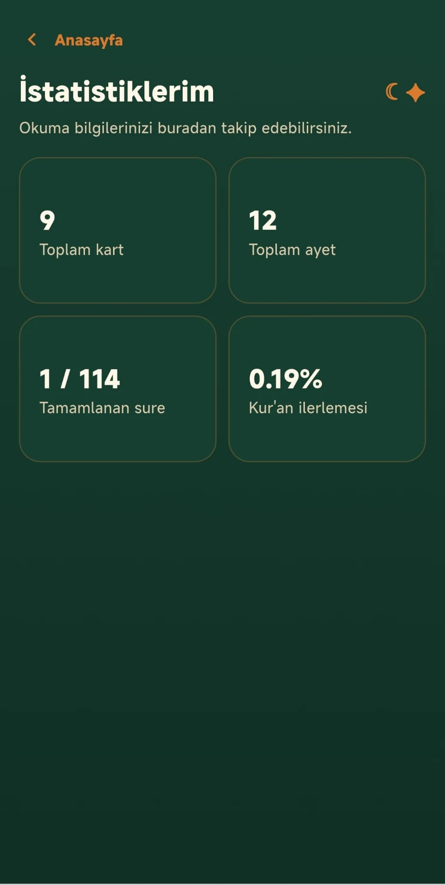

Ayet meallerini kısa ve anlaşılır kartlar hâlinde okuyun.
Okuma & keşif · Google Play’de yayında
Ayet Kartları
Kur’an-ı Kerim mealini kartlar hâlinde, sade ve dikkatinizi dağıtmayan bir arayüzle okuyun. Günlük okumanızı sakin ve düzenli biçimde sürdürün.
HEMENGoogle PlayAPP STOREÇok yakında



Bugün için bir ayet.
Uygulamadaki Diyanet mealinden; her gün başka bir ayet.
Uygulama hakkında
Sakin ve düzenli bir okuma alanı.
Puan, rozet veya yarışma baskısı olmadan; sade, saygılı ve huzurlu bir okuma deneyimi için tasarlandı.
Okuma akışınıza daha sonra aynı noktadan dönün.
Beğendiğiniz kartları saklayın, okuma istatistiklerinizi takip edin.
Meal içeriklerini desteklenen 21 dil arasından seçin.
Ayet Kartları ile sakin okumaya başlayın.
Android uygulamasını Google Play üzerinden indirebilirsiniz.